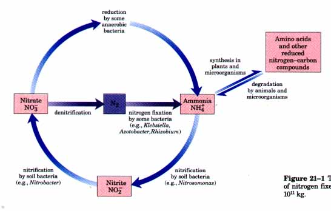
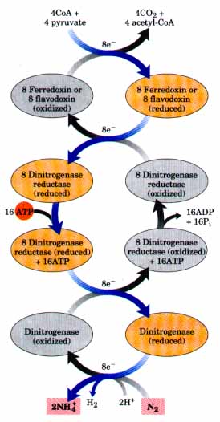
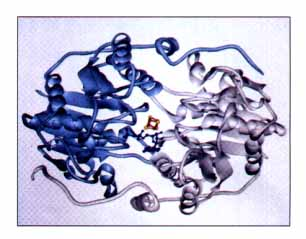
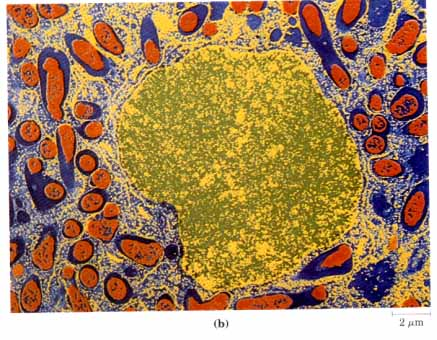
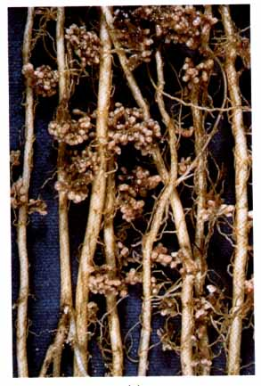

Nitrogen ranks behind only carbon, hydrogen, and oxygen in its contribution to the mass of living systems, as noted in Chapters 3 and 17. Most of this nitrogen is bound up in amino acids and nucleotides. We discussed the catabolism of amino acids in Chapter 17. All other aspects of the metabolism of nitrogen-containing compounds will be addressed in this chapter: first the biosynthesis of amino acids and other classes of molecules derived from them, then nucleotide metabolism.
There are several reasons for discussing the biosynthetic pathways leading to amino acids and nucleotides together; the most obvious are that both classes of molecules contain nitrogen (which arises from common biological sources) and that they are the precursors of proteins and nucleic acids. Perhaps more germane to a discussion of metabolism, however, is the simple fact that the two sets of pathways are extensively intertwined. Several key intermediates are shared in the biosynthetic pathways for nucleotides and some amino acids. Certain amino acids or parts of amino acids are incorporated into the structure of purines and pyrimidines, and in one case part of a purine ring is incorporated into the structure of an amino acid (histidine). Both sets of pathways also share much common chemistry, in particular a preponderance of reactions involving transfer of nitrogen or one-carbon groups.
The pathways to be described in the following pages can be intimidating to the beginning biochemistry student. Their apparent complexity arises not so much from the chemistry itself, which in many cases is well understood, but from the sheer number of steps and the structural complexity of many of the intermediates. They are best approached by maintaining a focus on metabolic principles already discussed, key intermediates and precursors, and common classes of reactions that recur. Even a cursory look at the chemistry can be rewarding, for some of the most unusual chemical transformations to be found in biological systems occur in these pathways. For instance, prominent examples of the rare biological use of the metals molybdenum, selenium, and vanadium are found here. The effort also offers a practical dividend, especially for students of human or veterinary medicine. Many genetic diseases of humans and animals have been traced to an absence of one or more of the enzymes of these pathways. Many pharmaceuticals used to combat infectious diseases are inhibitors of enzymes in these pathways, as are many of the most important agents in cancer chemotherapy.
Regulation is the final theme of this chapter. Because each of the amino acids and nucleotides is required in relatively small amounts, the metabolic flow through most of these pathways is not nearly as great as the biosynthetic flow leading to carbohydrate or fat in animal tissues. But, because the different amino acids and nucleotides must be made in the correct ratios and at the right time for protein and nucleic acid synthesis, their biosynthetic pathways must be accurately regulated and coordinated with each other. As discussed several times in earlier chapters, pathways can be regulated by changes in either the activity or the amounts of the enzymes involved. The pathways presented in this chapter provide some of the best-understood examples of the regulation of enzyme activity. A general discussion of the regulation of the amounts of different enzymes in a cell (that is, of their synthesis and degradation) can- be found in Chapter 27.
The biosynthetic pathways to the amino acids and nucleotides share a requirement for nitrogen, but soluble, biologically useful nitrogen compounds are generally scarce in natural environments. For this reason ammonia, amino acids, and nucleotides are used economically by most organisms. Indeed, we will see that free amino acids, purines, and pyrimidines, formed during metabolic turnover, are often salvaged and reused. We will now examine the pathways by which nitrogen from the environment is introduced into biological systems.
| The most abundant form of nitrogen is present in air, which is fourfifths molecular nitrogen (N2). However, only a relatively few species can convert atmospheric nitrogen into forms useful to living organisms; therefore the metabolic processes of different organisms function in an interdependent manner to salvage and reuse biologically available nitrogen in a vast nitrogen cycle (Fig. 21-1). The first step in the nitrogen cycle is the fixation (reduction) of atmospheric nitrogen by nitrogen-fixing bacteria to yield ammonia (NH3 or NH4+ ). |  Fignre 21-1 The nitrogen cycle. The total amount of nitrogen fixed annually in the biosphere exceeds 1011 kg. |
Although ammonia can be used by most living organisms, soil bacteria that derive their energy by oxidizing ammonia to nitrite (NO2- ) and ultimately nitrate (NO3 ) are so abundant and active that nearly all ammonia reaching the soil ultimately becomes oxidized to nitrate. This process is known as nitrification. Plants and many bacteria can readily reduce nitrate to ammonia by the action of nitrate reductases. Ammonia so formed can be built into amino acids by plants, which are then used by animals as a source of both nonessential and essential amino acids to build animal proteins. When organisms die, the microbial degradation of their proteins returns ammonia to the soil, where nitrifying bacteria convert it into nitrite and nitrate again. A balance is maintained between iixed nitrogen and atmospheric nitrogen by bacteria that convert nitrate to N2 under anaerobic conditions. In this process, called denitrification (Fig. 21-1), these soil bacteria use NO3 rather than O2 as the ultimate electron acceptor in a series of reactions that (like oxidative phosphorylation; Chapter 18) generates a transmembrane proton gradient that is used to synthesize ATP.
Now let us examine the process of nitrogen fixation, the first step in the nitrogen cycle.
| Only a relatively few species of
microorganisms, all of them prokaryotes, can iix
atmospheric nitrogen. The cyanobacteria, which inhabit
soils and fresh and salt waters, as well as other kinds
of free-living soil bacteria, such as Azotobacter
species, are capable of fixing atmospheric nitrogen.
Other nitrogen-fixing bacteria live as symbionts in the
root nodules of leguminous plants. The first important
product of nitrogen fixation in all of these organisms is
ammonia, which can be used by other organisms, either
directly or after its conversion into other soluble
compounds, such as nitrites, nitrates, or amino acids. The reduction of nitrogen to ammonia is an exergonic reaction: N2 + 3H2 The N≡N triple bond, however, is very stable, with a bond energy of 942 kJ/mol. Nitrogen fixation therefore has an extremely high activation energy, and atmospheric nitrogen is almost chemically inert under normal conditions. Ammonia is produced industrially by the Haber process (named for Fritz Haber, who invented it in 1910), which uses temperatures of 400 to 500 °C and pressures of tens of thousands of kilopascals (several hundred atmospheres) of N2 and H2 to provide the necessary activation energy. Biological nitrogen fixation must occur at 0.8 atm of nitrogen, and the high activation barrier is overcome, at least in part, by the binding and hydrolysis of ATP (described below). The overall reaction can be written N2 + lOH+ + 8e- + l6ATP Biological nitrogen fixation is carried out by a highly conserved complex of proteins called the nitrogenase complex (Fig. 21-2). The two key components of this complex are dinitrogenase reductase and dinitrogenase. Dinitrogenase reductase (Mr 60,000) is a dimer of two identical subunits (shown at right). It contains a single Fe4-S4 redox center (see Fig. 18-5) and can be oxidized and reduced by one electron. It also has two binding sites for ATP. Dinitrogenase is a tetramer with two copies of two different subunits (combined Mr 240,000). Dinitrogenase contains both iron and molybdenum, and its redox centers have a total of 2 Mo, 32 Fe, and 30 S per tetramer. About half of the Fe and S is present as four Fe4-S4 centers. The remainder is present as part of a novel iron-molybdenum cofactor of unknown structure. A form of nitrogenase that contains vanadium rather than molybdenum has been detected, and both types of nitrogenase systems can be produced by some bacterial species. The vanadium enzyme may be the primary nitrogen fixation system under some environmental conditions, but it has not been well characterized. |
 Figure 21-2 Nitrogen fixation by the nitrogenase complex. Electrons are transferred from pyruvate to dinitrogenase via ferredoxin (or flavodoxin) and dinitrogenase reductase. Dinitrogenase is reduced one electron at a time by dinitrogenase reductase, and must be reduced by at least six electrons to fix one molecule of Nz. An additional two electrons (thus a total of eight) are used to reduce two H' to H2 in a process that obligatorily accompanies nitrogen fixation in anaerobes. The subunit structures and metal cofactors of the dinitrogenase reductase and dinitrogenase proteins are described in the text. |
| Nitrogen fixation is carried out by a highly reduced form of dinitrogenase, and it requires eight electrons: six for the reduction of N2 and two to produce one molecule of H2 as an obligate part of the reaction mechanism. Dinitrogenase is reduced by the transfer of electrons from dinitrogenase reductase (Fig. 21-2). Dinitrogenase has two binding sites for the reductase, and the required eight electrons are transferred to dinitrogenase one at a time, with the reduced reductase binding and the oxidized reductase dissociating from dinitrogenase in a cycle. This cycle requires the hydrolysis of ATP by the reductase. The immediate source of electrons to reduce dinitrogenase reductase varies, with reduced ferredoxin (p. 582: see also Fig. 18-5), reduced flavodoxin, and perhaps other sources playing a role in some systems. In at least one instance, the ultimate source of electrons is pyruvate (Fig. 21-2). |  Ribbon diagram of the structure of dinitrogenase reductase. The two subunits are shown in gray and light blue. A bound ADP is shown in dark blue. Iron and sulfur atoms in the Fe4-S4 complex are shown in red and yellow, respectively. |
The role of ATP in this process is interesting in that it appears to be catalytic rather than thermodynamic. Remember that ATP can contribute not only chemical energy, through the hydrolysis of one or more of its phosphodiester bonds, but also binding energy (pp. 205 and 353) through noncovalent interactions that can be used to lower the activation energy. In the reaction carried out by dinitrogenase reductase, both ATP binding and ATP hydrolysis bring about protein conformational changes that evidently help overcome the high activation energy of nitrogen fixation. ATP binding to the reductase shifts the reduction potential (E'0) of this protein from -250 to -400 mV, an enhancement of its reducing power that is required to transfer electrons to dinitrogenase. Two ATP molecules are then hydrolyzed during the actual transfer of each electron from dinitrogenase reductase to dinitrogenase.
Another important characteristic of the nitrogenase complex is an extreme lability when oxygen is present. The reductase is inactivated in air, with a half life of 30 s. The dinitrogenase has a half life of 10 min in air. Free-living bacteria that fix nitrogen avoid or solve this problem in a variety of ways. Some exist only anaerobically or repress nitrogenase synthesis when oxygen is present. Some aerobic bacteria, such as Azotobacter Uinelandii, partially uncouple electron transport from ATP synthesis so that oxygen is burned off as rapidly as it enters the cell (Chapter 18). When fixing nitrogen, cultures of these bacteria actually warm up as a result of their efforts to remove oxygen. The nitrogen-fixing cyanobacteria use still another approach. One of every nine cells differentiates into a heterocyst, a cell specialized for nitrogen fixation, with thick walls to prevent oxygen from entering.
 The symbiotic relationship between leguminous plants and the nitrogen-fixing bacteria in their root nodules (Fig. 21-3) solves both the energetic requirements of the reaction and the oxygen lability of the enzymes. The energy required for nitrogen fixation was probably the evolutionary driving force for this association of plants with bacteria. The bacteria in root nodules have access to a large reservoir of energy in the form of the abundant carbohydrate made available by the plant. Because of this energy source, the bacteria in root nodules may fix hundreds of times more nitrogen than their free-living cousins under conditions generally encountered in soils. To solve the oxygen-toxicity problem, the bacteria in root nodules are bathed in a solution of an oxygen-binding protein called leghemoglobin. This protein is produced by the plant (although the heme may be contributed by the bacteria). Leghemoglobin eff`iciently delivers oxygen to the electron transfer system of the bacteria, and it binds all of the oxygen so that it cannot interfere with nitrogen fixation. The efficiency of the symbiosis between plants and bacteria is evident in the enrichment of soil nitrogen brought about by leguminous plants. This enrichment is the basis of the crop rotation methods used by many farmers, in which plantings of nonleguminous plants (such as corn) that extract fixed nitrogen from the soil are alternated every few years with planting of legumes such as alfalfa, peas, or clover. |
 Figure 21-3 (a) Nitrogen-fixing nodules on the roots of bird's-foot trefoil, a legume. (b) Electron micrograph of a thin section through a pea root nodule. Symbiotic nitrogen-fixing bacteria (bacteroids, shown in red) live inside the nodule cells, surrounded by the peribacteroid membrane (blue). Bacteroids produce the enzyme nitrogenase, which converts atmospheric nitrogen (N2) into ammonium (NH4+ ); without the bacteroids, the plant is unable to utilize N2. The root cells provide some factors essential for nitrogen fixation, particularly leghemoglobin, which has a very high affinity for binding oxygen. Oxygen is highly inhibitory to nitrogenase. (The cell nucleus is shown in yellow/ green. The infected plant cell also contains other organelles, not visible in this micrograph, that are normally found in plant cells.) |
Nitrogen fixation is the subject of intense study because of its immense practical importance. The expense of producing ammonia industrially for use in fertilizers increases with the cost of energy supplies, and this has led to efforts to develop recombinant or transgenic organisms that can fix nitrogen. Recombinant DNA techniques are being used to transfer the DNA that encodes nitrogenase and related enzymes into non-nitrogen-fixing bacteria and plants (Chapter 28). Success in these efforts will depend on overcoming the problem of oxygen toxicity in any cell producing nitrogenase.

 2NH3 ,ΔG°' = -33.5 kJ/mol
2NH3 ,ΔG°' = -33.5 kJ/mol